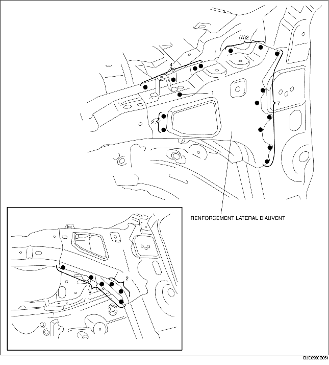

DEPOSE DE RENFORCEMENT LATERAL D'AUVENT
B3E098053290B01
1. Déposer le renforcement latéral d'auvent.
Attention
• Veiller à ne pas endommager le pare-brise lors du perçage des 2 emplacements indiqués par (A).
